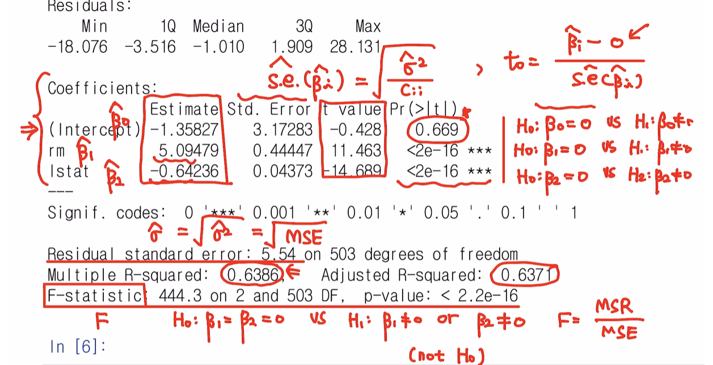
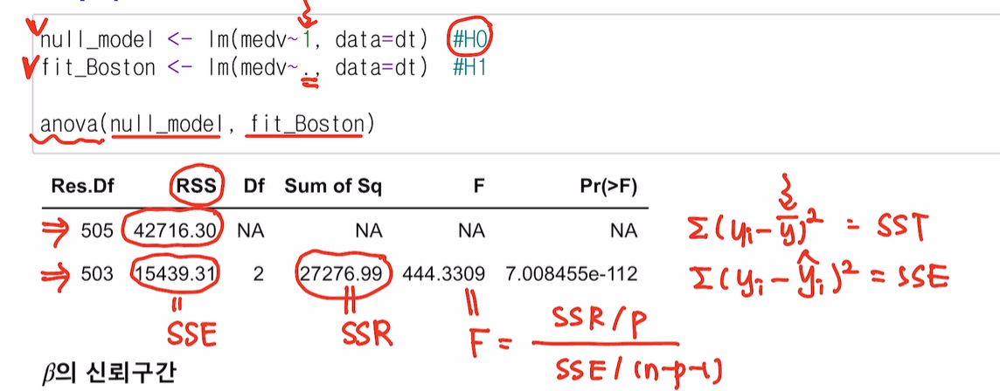
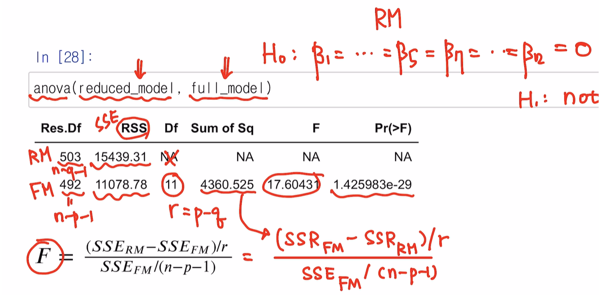
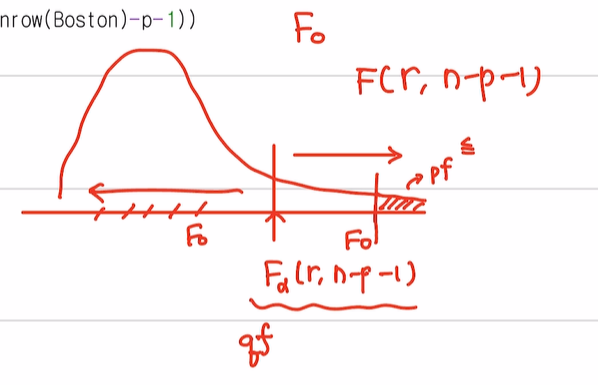

Loading required package: zoo
Attaching package: 'zoo'The following objects are masked from 'package:base':
as.Date, as.Date.numericJiyunLim
April 18, 2023
# 보스턴 집값 데이터 이 데이터는 보스턴 근교 지역의 집값 및 다른 정보를 포함한다.
# MASS 패키지를 설치하면 데이터를 로딩할 수 있다.
data(Boston)
head(Boston) crim zn indus chas nox rm age dis rad tax ptratio black lstat
1 0.00632 18 2.31 0 0.538 6.575 65.2 4.0900 1 296 15.3 396.90 4.98
2 0.02731 0 7.07 0 0.469 6.421 78.9 4.9671 2 242 17.8 396.90 9.14
3 0.02729 0 7.07 0 0.469 7.185 61.1 4.9671 2 242 17.8 392.83 4.03
4 0.03237 0 2.18 0 0.458 6.998 45.8 6.0622 3 222 18.7 394.63 2.94
5 0.06905 0 2.18 0 0.458 7.147 54.2 6.0622 3 222 18.7 396.90 5.33
6 0.02985 0 2.18 0 0.458 6.430 58.7 6.0622 3 222 18.7 394.12 5.21
medv
1 24.0
2 21.6
3 34.7
4 33.4
5 36.2
6 28.7B보스턴 근교 506개 지역에 대한 범죄율 (crim)등 14개의 변수로 구성 • crim : 범죄율 • zn: 25,000평방비트 기준 거지주 비율 • indus: 비소매업종 점유 구역 비율 • chas: 찰스강 인접 여부 (1=인접, 0=비인접) • nox: 일산화질소 농도 (천만개 당) • rm: 거주지의 평균 방 갯수 • age: 1940년 이전에 건축된 주택의 비율 • dis: 보스턴 5대 사업지구와의 거리 • rad: 고속도로 진입용이성 정도 • tax: 재산세율 (10,000달러 당) • ptratio: 학생 대 교사 비율 • black: 1000(B − 0.63)2, B: 아프리카계 미국인 비율 • lstat : 저소득층 비율 * • medv: 주택가격의 중앙값 (단위:1,000달러 당)
Call:
lm(formula = medv ~ rm + lstat, data = Boston)
Residuals:
Min 1Q Median 3Q Max
-18.076 -3.516 -1.010 1.909 28.131
Coefficients:
Estimate Std. Error t value Pr(>|t|)
(Intercept) -1.35827 3.17283 -0.428 0.669
rm 5.09479 0.44447 11.463 <2e-16 ***
lstat -0.64236 0.04373 -14.689 <2e-16 ***
---
Signif. codes: 0 '***' 0.001 '**' 0.01 '*' 0.05 '.' 0.1 ' ' 1
Residual standard error: 5.54 on 503 degrees of freedom
Multiple R-squared: 0.6386, Adjusted R-squared: 0.6371
F-statistic: 444.3 on 2 and 503 DF, p-value: < 2.2e-16
\[\bf{y} = \bf{X}\bf{\beta} + \bf{\epsilon} \Rightarrow \hat{\bf{\beta}}=(\bf{X}^\top X)^{-1}\bf{X}^\top \bf{y}\]
[,1]
[1,] -1.3582728
[2,] 5.0947880
[3,] -0.6423583lm을 이용해서 하나 행렬을 이용해서 하나 동일한 결과를 얻음을 확인할 수 있다.\[\hat{y} = \bf{X}\hat{\bf{\beta}}\]
\[SSE = \sum(y_i - \hat{y}_i)^2,\quad RMSE = \sqrt\frac{SSE}{n-p-1} = \hat{\sigma}\]
[1] 5.540257[1] 5.540257 rm lstat medv
1 6.575 4.98 24.0
2 6.421 9.14 21.6
3 7.185 4.03 34.7
4 6.998 2.94 33.4
5 7.147 5.33 36.2
6 6.430 5.21 28.7
Call:
lm(formula = medv ~ rm + lstat, data = dt)
Residuals:
Min 1Q Median 3Q Max
-18.076 -3.516 -1.010 1.909 28.131
Coefficients:
Estimate Std. Error t value Pr(>|t|)
(Intercept) -1.35827 3.17283 -0.428 0.669
rm 5.09479 0.44447 11.463 <2e-16 ***
lstat -0.64236 0.04373 -14.689 <2e-16 ***
---
Signif. codes: 0 '***' 0.001 '**' 0.01 '*' 0.05 '.' 0.1 ' ' 1
Residual standard error: 5.54 on 503 degrees of freedom
Multiple R-squared: 0.6386, Adjusted R-squared: 0.6371
F-statistic: 444.3 on 2 and 503 DF, p-value: < 2.2e-16Analysis of Variance Table
Response: medv
Df Sum Sq Mean Sq F value Pr(>F)
rm 1 20654.4 20654.4 672.90 < 2.2e-16 ***
lstat 1 6622.6 6622.6 215.76 < 2.2e-16 ***
Residuals 503 15439.3 30.7
---
Signif. codes: 0 '***' 0.001 '**' 0.01 '*' 0.05 '.' 0.1 ' ' 1\[H_0 : \beta_1=\beta_2=0 \text{ vs. } H_1:not \space H_0\]
\(H_0: y = \beta_0 \cdot 1\) \(H_1: y = \beta_0 \cdot 1 + \beta_1 x_1 + \beta_2 x_2\)
null_model <- lm(medv~1, data=dt) # H0
fit_Boston <- lm(medv~., data=dt) # H1
anova(null_model, fit_Boston) ## null 가설 선택? 설명변수 다쓴 모델 선택?Analysis of Variance Table
Model 1: medv ~ 1
Model 2: medv ~ rm + lstat
Res.Df RSS Df Sum of Sq F Pr(>F)
1 505 42716
2 503 15439 2 27277 444.33 < 2.2e-16 ***
---
Signif. codes: 0 '***' 0.001 '**' 0.01 '*' 0.05 '.' 0.1 ' ' 1
\(\beta_i\) 의 \(100(1-\alpha)\%\) \(\text{CI}\)
\(\beta_i\) 의 covariance-variance matrix
\(Var(\beta) = (\bf{X}^\top \bf{X})^{-1} \cdot \sigma^2 = \begin{bmatrix} Var(\beta_0) & Cov(\beta_0, \beta_1) & Cov(\beta_0, \beta_2) \\ Cov(\beta_0, \beta_1) & Var(\beta_1) & Cov(\beta_1, \beta_2) \\ Cov(\beta_0, \beta_2) & Cov(\beta_1, \beta_2) & Var(\beta_2) \end{bmatrix}\)
(Intercept) rm lstat
(Intercept) 10.06683612 -1.39248641 -0.099178133
rm -1.39248641 0.19754958 0.011930670
lstat -0.09917813 0.01193067 0.001912441 2.5 % 97.5 %
(Intercept) -7.5919003 4.8753547
rm 4.2215504 5.9680255
lstat -0.7282772 -0.5564395(Intercept) rm lstat
4.8753547 5.9680255 -0.5564395 (Intercept) rm lstat
-7.5919003 4.2215504 -0.7282772 \(n=506, p =2 \to df = 503\)
summary(fit_Boston)$coef[,2] : covariance를 이용한 표준오차. (summary의 2번째 열의 리턴값.)
\(E(Y|x_0)\) , \(y=E(Y|x_0) + \epsilon\)
fit lwr upr
1 27.88166 27.17347 28.58985 fit lwr upr
1 27.88166 16.97375 38.78957\(Model: y = \beta_1 x_1 + \beta_2x_2 + \epsilon\)
Call:
lm(formula = medv ~ 0 + rm + lstat, data = dt)
Residuals:
Min 1Q Median 3Q Max
-17.714 -3.498 -1.075 1.877 27.750
Coefficients:
Estimate Std. Error t value Pr(>|t|)
rm 4.90691 0.07019 69.91 <2e-16 ***
lstat -0.65574 0.03056 -21.46 <2e-16 ***
---
Signif. codes: 0 '***' 0.001 '**' 0.01 '*' 0.05 '.' 0.1 ' ' 1
Residual standard error: 5.536 on 504 degrees of freedom
Multiple R-squared: 0.9485, Adjusted R-squared: 0.9482
F-statistic: 4637 on 2 and 504 DF, p-value: < 2.2e-16
Call:
lm(formula = medv ~ ., data = dt)
Residuals:
Min 1Q Median 3Q Max
-18.076 -3.516 -1.010 1.909 28.131
Coefficients:
Estimate Std. Error t value Pr(>|t|)
(Intercept) -1.35827 3.17283 -0.428 0.669
rm 5.09479 0.44447 11.463 <2e-16 ***
lstat -0.64236 0.04373 -14.689 <2e-16 ***
---
Signif. codes: 0 '***' 0.001 '**' 0.01 '*' 0.05 '.' 0.1 ' ' 1
Residual standard error: 5.54 on 503 degrees of freedom
Multiple R-squared: 0.6386, Adjusted R-squared: 0.6371
F-statistic: 444.3 on 2 and 503 DF, p-value: < 2.2e-16\(R^2\) 값만 보면 \(63\% \to 94\%\) 로 올라갔으니까 절편이 없는 모형 선택? 해야겠다고 생각할 수 있다.
\(R^2 = \frac{SSR}{SST} = \frac{\sum(\hat{y}_i - \bar{y})^2}{\sum(y_i-\bar{y})^2}\)
즉, \(R^2\) 는 설명변수 없이 (\(y\) 의) 평균만 써서 예측하는 것과 설명변수를 2개를 썻을 때 얼마나 달라지는지 비교하는 것이다.
절편이 없는 모형에서 \(R^2\) 평균이 기준이 아니라 \(0\) 으로부터 (원점)으로부터 얼마나 떨어져 있는 가를 뜻한다. (\(R^2 = \frac{\sum(\hat{y}_i - 0)^2}{\sum(y_i-0)^2}\))
절편이 있느냐 없느냐에 따라 \(R^2\) 의 설명이 조금 달라진다.
따라서 절편이 있다 vs. 없다. 를 선택할 때 \(R^2\)를 기준으로 하기는 에매하다. \(\to\) MSE 혹은 RMSE(\(=\hat{\sigma}\)) 를 평가척도로 사용하자.
따라서 RMSE 값을 비교해보면 두 모델은 별로 큰 차이가 없다. (절편자체가 별로 유의하지 않았음.)
이 경우에는 절편을 빼도 될 것 같다.
studentized Breusch-Pagan test
data: fit_Boston
BP = 1.5297, df = 2, p-value = 0.4654
Shapiro-Wilk normality test
data: res
W = 0.9098, p-value < 2.2e-16
Call:
lm(formula = medv ~ ., data = Boston)
Residuals:
Min 1Q Median 3Q Max
-15.595 -2.730 -0.518 1.777 26.199
Coefficients:
Estimate Std. Error t value Pr(>|t|)
(Intercept) 3.646e+01 5.103e+00 7.144 3.28e-12 ***
crim -1.080e-01 3.286e-02 -3.287 0.001087 **
zn 4.642e-02 1.373e-02 3.382 0.000778 ***
indus 2.056e-02 6.150e-02 0.334 0.738288
chas 2.687e+00 8.616e-01 3.118 0.001925 **
nox -1.777e+01 3.820e+00 -4.651 4.25e-06 ***
rm 3.810e+00 4.179e-01 9.116 < 2e-16 ***
age 6.922e-04 1.321e-02 0.052 0.958229
dis -1.476e+00 1.995e-01 -7.398 6.01e-13 ***
rad 3.060e-01 6.635e-02 4.613 5.07e-06 ***
tax -1.233e-02 3.760e-03 -3.280 0.001112 **
ptratio -9.527e-01 1.308e-01 -7.283 1.31e-12 ***
black 9.312e-03 2.686e-03 3.467 0.000573 ***
lstat -5.248e-01 5.072e-02 -10.347 < 2e-16 ***
---
Signif. codes: 0 '***' 0.001 '**' 0.01 '*' 0.05 '.' 0.1 ' ' 1
Residual standard error: 4.745 on 492 degrees of freedom
Multiple R-squared: 0.7406, Adjusted R-squared: 0.7338
F-statistic: 108.1 on 13 and 492 DF, p-value: < 2.2e-16
Call:
lm(formula = medv ~ rm + lstat, data = Boston)
Residuals:
Min 1Q Median 3Q Max
-18.076 -3.516 -1.010 1.909 28.131
Coefficients:
Estimate Std. Error t value Pr(>|t|)
(Intercept) -1.35827 3.17283 -0.428 0.669
rm 5.09479 0.44447 11.463 <2e-16 ***
lstat -0.64236 0.04373 -14.689 <2e-16 ***
---
Signif. codes: 0 '***' 0.001 '**' 0.01 '*' 0.05 '.' 0.1 ' ' 1
Residual standard error: 5.54 on 503 degrees of freedom
Multiple R-squared: 0.6386, Adjusted R-squared: 0.6371
F-statistic: 444.3 on 2 and 503 DF, p-value: < 2.2e-16\(H_0: \beta_1 = \dots = \beta_5 = \beta_7 = \dots \beta_{12} = 0 \quad (RM)\)
\(H_1: \text{not } H_0\)
Analysis of Variance Table
Model 1: medv ~ rm + lstat
Model 2: medv ~ crim + zn + indus + chas + nox + rm + age + dis + rad +
tax + ptratio + black + lstat
Res.Df RSS Df Sum of Sq F Pr(>F)
1 503 15439
2 492 11079 11 4360.5 17.604 < 2.2e-16 ***
---
Signif. codes: 0 '***' 0.001 '**' 0.01 '*' 0.05 '.' 0.1 ' ' 1
\(H_0: \beta_{indus} = \beta_{age} = 0\)
\(H_1: \text{not } H_0\)
reduced_model = lm(medv ~ .-age-indus, data = Boston) # q=11, r=2
full_model = lm(medv ~ ., data=Boston) # p=13
anova(reduced_model, full_model)Analysis of Variance Table
Model 1: medv ~ (crim + zn + indus + chas + nox + rm + age + dis + rad +
tax + ptratio + black + lstat) - age - indus
Model 2: medv ~ crim + zn + indus + chas + nox + rm + age + dis + rad +
tax + ptratio + black + lstat
Res.Df RSS Df Sum of Sq F Pr(>F)
1 494 11081
2 492 11079 2 2.5794 0.0573 0.9443
판매량 광고비 데이터.
x1<-c(4,8,9,8,8,12,6,10,6,9)
x2<-c(4,10,8,5,10,15,8,13,5,12)
y<-c(9,20,22,15,17,30,18,25,10,20)
fit<-lm(y~x1+x2) ##FM
summary(fit)
Call:
lm(formula = y ~ x1 + x2)
Residuals:
Min 1Q Median 3Q Max
-2.4575 -1.9100 0.3314 0.6388 3.2628
Coefficients:
Estimate Std. Error t value Pr(>|t|)
(Intercept) -0.6507 2.9075 -0.224 0.8293
x1 1.5515 0.6462 2.401 0.0474 *
x2 0.7599 0.3968 1.915 0.0970 .
---
Signif. codes: 0 '***' 0.001 '**' 0.01 '*' 0.05 '.' 0.1 ' ' 1
Residual standard error: 2.278 on 7 degrees of freedom
Multiple R-squared: 0.9014, Adjusted R-squared: 0.8732
F-statistic: 32 on 2 and 7 DF, p-value: 0.0003011즉, \(H_0: \beta_1 = 1\) 이라는 것은 다음과 같다.
\(y = \beta_0 + \beta_1 x_1 + \beta_2 x_2 + \epsilon\)
\(H_0: y = \beta_0 + x_1 + \beta_2x_2 + \epsilon \\ \Rightarrow y-x_1 = \beta_0 + \beta_2x_2 + \epsilon \\ \Rightarrow z = \beta_0 + \beta_2x_2 + \epsilon\)
위와 같이 변수변환을 하게 되면 결국 단순선형회귀가 된다.
개별회귀계수 유의성 검정인 t검정 해도 됩니다. \(\big(t_0 = \frac{\hat{\beta}_1-1}{\hat{\text{s.e}(\hat{\beta}_1)}}\big)\)
Linear hypothesis test
Hypothesis:
x1 = 1
Model 1: restricted model
Model 2: y ~ x1 + x2
Res.Df RSS Df Sum of Sq F Pr(>F)
1 8 40.105
2 7 36.326 1 3.7788 0.7282 0.4217Linear hypothesis test
Hypothesis:
x1 - x2 = 0
Model 1: restricted model
Model 2: y ~ x1 + x2
Res.Df RSS Df Sum of Sq F Pr(>F)
1 8 39.535
2 7 36.326 1 3.209 0.6184 0.4574Linear hypothesis test
Hypothesis:
x1 - x2 = 1
Model 1: restricted model
Model 2: y ~ x1 + x2
Res.Df RSS Df Sum of Sq F Pr(>F)
1 8 36.549
2 7 36.326 1 0.22253 0.0429 0.8418Linear hypothesis test
Hypothesis:
x1 - x2 = 5
Model 1: restricted model
Model 2: y ~ x1 + x2
Res.Df RSS Df Sum of Sq F Pr(>F)
1 8 127.035
2 7 36.326 1 90.709 17.48 0.004133 **
---
Signif. codes: 0 '***' 0.001 '**' 0.01 '*' 0.05 '.' 0.1 ' ' 1또는 다음의 방법으로 검정을 수행할 수 있다.
Call:
lm(formula = y1 ~ z1)
Residuals:
Min 1Q Median 3Q Max
-2.5054 -1.9294 0.4236 0.6821 3.4473
Coefficients:
Estimate Std. Error t value Pr(>|t|)
(Intercept) -1.0014 2.2175 -0.452 0.663574
z1 0.6824 0.1242 5.493 0.000578 ***
---
Signif. codes: 0 '***' 0.001 '**' 0.01 '*' 0.05 '.' 0.1 ' ' 1
Residual standard error: 2.137 on 8 degrees of freedom
Multiple R-squared: 0.7904, Adjusted R-squared: 0.7642
F-statistic: 30.17 on 1 and 8 DF, p-value: 0.0005785Analysis of Variance Table
Response: y1
Df Sum Sq Mean Sq F value Pr(>F)
z1 1 137.851 137.851 30.174 0.0005785 ***
Residuals 8 36.549 4.569
---
Signif. codes: 0 '***' 0.001 '**' 0.01 '*' 0.05 '.' 0.1 ' ' 1Analysis of Variance Table
Response: y
Df Sum Sq Mean Sq F value Pr(>F)
x1 1 313.043 313.043 60.3231 0.00011 ***
x2 1 19.030 19.030 3.6671 0.09704 .
Residuals 7 36.326 5.189
---
Signif. codes: 0 '***' 0.001 '**' 0.01 '*' 0.05 '.' 0.1 ' ' 1Analysis of Variance Table
Response: y1
Df Sum Sq Mean Sq F value Pr(>F)
z1 1 137.851 137.851 30.174 0.0005785 ***
Residuals 8 36.549 4.569
---
Signif. codes: 0 '***' 0.001 '**' 0.01 '*' 0.05 '.' 0.1 ' ' 1